Practicum 9.1 - Surface-Based Analysis
Synopsis
Surface-based methods provide several advantages over volume-based methods for analysing data on the cerebral cortex [Dickie et al. 2019, Coalson et al. 2018, Glasser et al. 2013]. Fundamentally, they seem to provide a more neurobiologically valid representation of the way that function is mapped along the surface of the cortex as a 2D metric [Glasser et al. 2013] . This in turn affords other downstream benefits that make surface-based approaches attractive for studying the cortex.
These benefits include the facilitation of more computationally tractable algorithms for aligning cortical convolutions across many subjects thus leading to better alignment of functional areas [Coalsson et al. 2018] and the encouragement of constrained spatial smoothing methods that reduce the corruption of functional signal from non-related parts of the brain [Dickie et al. 2019]. These two benefits improve the statistical power of surface based studies. Surface-based methods also allow for much better visualization of cortical patterns of structure and function by the use of inflated and flat surfaces that expose sulci that are usually hidden in the volume.
In addition, surface-based models of the cortex by nature lead to more compact and efficient representation. For example, to achieve 2mm resolution of the cortex, the Human Connectome Project uses a CIFTI file with 91282 vertices and voxels to represent the whole brain. By contrast, the MNI 2mm mask uses 228,483 voxels [Glasser et al. 2013] to cover the brain in volumetric analysis. In addition to reduced file sizes the use of surface-based data formats easilly allows multi-modal data to be quickly aligned and matched within and across subjects greatly improving the speed and ease of analysis [Dickie et al. 2019].
Objectives
This practicum will introduce you to some of the steps required for preparing MRI neuroimaging data for group surface-based statistical analysis. These steps have been copied from the Human Connectome Project's Pipelines [Glasser et al. 2013] which have been recreated by Dickie et al. 2019 for non-HCP (aka legacy) data. The scripts for this practicum are described below:
001_inflate.sh: Usewb_commandto create midthickness surface layer and inflated layers.002_register.sh: Usemsmandwb_commandto register 2 subject meshes to a standard surface template003_projection.sh: Usewb_commandto map an fmri volume onto a GIFTI surface mesh004_ciftigen.sh: Usewb_commandto map an fmri volume into a CIFTI file005_smoothing.sh: Usewb_commandto perform surface-based spatial smoothing on the left and right hemispheres, as well as on the subcortical volume.
Note
Please appreciate that the processing tasks you will undertake in this practicum are provided for demonstration purposes only and to shed some light on how these surface processing steps are roughly accomplished. For your research you will want to use one of the robust, established pipelines that not only automate the steps above but utilize the most up-to-date and accurate methods for implementing these steps. The one step that is usually left to the user to do by these pipelines is spatial smoothing. However conservative use of spatial smoothing, even when constrained to the surface, is advised [Coalson et al. 2018].
FMRIPrep currently performs robust pre-processing on fmri data and can output this out as a surface-based CIFTI .dtseries.nii file for surface based analysis.
If you have HCP-style data then you may be able to adapt the HCP Pipelines to work with your data. Alternatively if you have non-HCP data then the Ciftify pipeline will perform an HCP-style analysis on your data.
And of course Freesurfer has many different tools for surface-based analysis. Many of the steps mentioned above can be accomplished with equivalent freesurfer commands. Most notable of course is that all of the above pipelines depend on freesurfer for the creation of the initial surface mesh models.
In addition to these there are several other tools and methods that can provide a good starting point for developing robust surface-based processing pipelines.
Downloads/Installation
This practicum requires the following materials/folder setup for successful completion:
- A copy of the HCP's Connectome workbench for access to
wb_view. - You will also need the Ciftify docker image which you can obtain as follows
docker pull tigrlab/fmriprep_ciftify:v1.3.2-2.3.3. This will allow us to run our scripts that callwb_commandin a windows environment. It will also give us access tomsmif you decide at a later point to fully run the registration step.
Note
We will be running the scripts using the docker container as shown below. For each script a command line will be provided which you will be able to copy and paste into your terminal window. Try to avoid extracting the zip folder into a root directory that has spaces in it to avoid problems with binding the current directory $PWD. If you do have to use a root directory with spaces in it then you can use single quotes in the bind as follows -v '${PWD}':/mnt. Double quotes might also work -v "${PWD}":/mnt.
docker run -v ${PWD}:/mnt --rm -it --entrypoint bash tigrlab/fmriprep_ciftify:v1.3.2-2.3.3 /mnt/SCRIPTNAME
- The data and scripts for this practicum can be downloaded from Classhare folder under the practicum91 folder in a zip file practicum91.zip. Download this zip file to your local computer and extract.
- The practicum files can also alternatively be downloaded as a zip file from OSF in the folder 09-Surface-Based-Analysis
Your folder structure should look like this after extraction.
practicum91
├── 001_inflate.sh
├── 002_register.sh
├── 003_projection.sh
├── 004_ciftigen.sh
├── 005_smoothing.sh
└── DATA
├── 100307
├── config
├── MMP_HCP
├── sub-01
└── sub-02
Provenance
Scripts
The scripts for this practicum have been written based on an inspection of the HCP pipelines and the Ciftify pipelines. Only the essential aspects of the processing steps used in these pipelines have been provided for demonstration purposes and so these scripts are suboptimal for actual research purposes and additionally have not been tested thoroughly.
Data
We will be using a subset of the Rhyme Judgment data (subjects sub-01 and sub-02) acquired by [Xue and Poldrack 2007]. This data has also been used in an FMRIPrep exemplar pipeline for task-based analysis [Esteban et al. 2020]. The data has been processed using fmriprep, freesurfer and ciftify as described further below.
We will also use flat and spherical surfaces from subject 100307 which is included as part of the Human Connectome Project's Young Adult (YA) 1200 Subject Release. The HCP has terms of reference for using their data. To use HCP data please sign on to the HCP website and register for free.
The folder MMP_HCP contains a subset of the files released for the Multi-modal parcellation of Human Cerebral Cortex. This atlas is a comprehensive delineation of about 180 cerebral cortex areas per hemisphere obtained using the HCP's advanced analysis approach [Glasser et al. 2013, Glasser et al. 2016].
Miscellaneous HCP configuration files (atlas and registration templates, MSM Sulc registration config file etc.) are provided in config. These have been copied from the HCP Pipelines
Initial processing
The data was processed initially through FMRIPrep to create aligned fMRI volumes in anatomical space. FMRIprep also uses Freesurfer to generate the initial surface meshes for each subject. The fmriprep processed data was then used as the input to Ciftify to create the final dataset that you have available to you. Several of the Ciftify outputs that are not required for this practicum have been deleted to keep the download manageable.
Task 1: Create midthickness, inflated and very-inflated surfaces
- Open a terminal and navigate to the
practicum91folder. - Run the
001_inflate.shscript through the docker image as follows:
docker run -v ${PWD}:/mnt --rm -it --entrypoint bash tigrlab/fmriprep_ciftify:v1.3.2-2.3.3 /mnt/001_inflate.sh
-
The script creates the midthickness layer
amended.sub-01.L.midthickness.32k_fs_LR.surf.giiin the directorypracticum91/output/sub-01. This layer lies between the pial and the white layer and is created usingwb_command -surface-average. This layer is useful for projecting functional data from the volume onto the cortex. -
The script also creates an inflated and a very_inflated layer in the same directory using
wb_command -surface-generate-inflated. These layers allow functional areas to be better visualized in the cortex.
Note
The script generates the inflated surfaces from the midthickness layer. This is not strictly how it's done in Freesurfer which instead uses the white surface to create the inflated surfaces.
-
If you want to peform this on subject 02 as well then just change the subject variable on line 27 in
001_inflate.shusing a simple text editor, as followsSUB=sub-02and rerun the docker command. -
Open wb_view and navigate to
./DATA/sub-01/MNINonLinear/and load inT1w.nii.gz. Now navigate up one folder tofsaverage_LR32kand load in the two surfacessub-01.L.pial.32k_fs_LR.surf.giiandsub-01.L.white.32k_fs_LR.surf.gii - Now load in the midthickness layer you created
amended.sub-01.L.midthickness.32k_fs_LR.surf.giifrom./output/sub-01 - Click on the volume view and select the Vol/Surf Tab. Assign each drop down in the File column to one of the three different overlays and assign each a different color.
- Notice that your midthickness layer is indeed between the pial and the white layer. You may have to zoom in to see this more clearly.
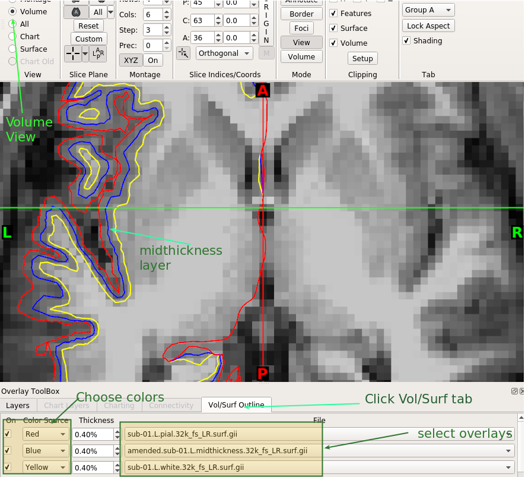
- Now we will see how the inflated and very_inflated layers better help us visualize cortical areas. We will also look at the flat layer and a spherical layer that are provided by the HCP's pipelines.
- In wb_view now load in the inflated
amended.sub-01.L.inflated.32k_fs_LR.surf.giiand very_inflated layersamended.sub-01.L.very_inflated.32k_fs_LR.surf.giifrom from./output/sub-01. - Navigate to
./DATA/MMP_HCPand load in all 4 files that you see there. This is the Human Connectome's Multi-modal Parcellation of Human Cerebral Cortex [Glasser et al. 2016]. You might need to change Files of Type: toAny File (*)to be able to see them all. - These files are
Q1-Q6_RelatedValidation210.CorticalAreas_dil_Final_Final_Areas_Group_Colors.32k_fs_LR.dlabel.nii,Q1-Q6_RelatedValidation210.L.CorticalAreas_dil_Final_Final_Areas_Group.32k_fs_LR.border,Q1-Q6_RelatedValidation210.R.CorticalAreas_dil_Final_Final_Areas_Group.32k_fs_LR.borderandMMP_areas_tangential_32k_bothHems_inflated.wb_annot - Finally navigate to
./Data/100307and load in100307.L.flat.32k_fs_LR.surf.giiand100307.L.sphere.32k_fs_LR.surf.gii - Click on Surface View
- Activate the
Q1-Q6_RelatedValidation210.CorticalAreas_dil_Final_Final_Areas_Group_Colors.32k_fs_LR.dlabel.niilayer by clicking it's checkbox On - In the Brain Structures and Surface panel, change the surfaces in turn using the drop down box to see how the Multi Modal Parcellations are rendered on the surface.
- Notice how the inflated layers allow you to see cortical areas normally buried in the sulci. Also notice how the flat layer allows you to see both the medial and lateral surfaces at the same time.
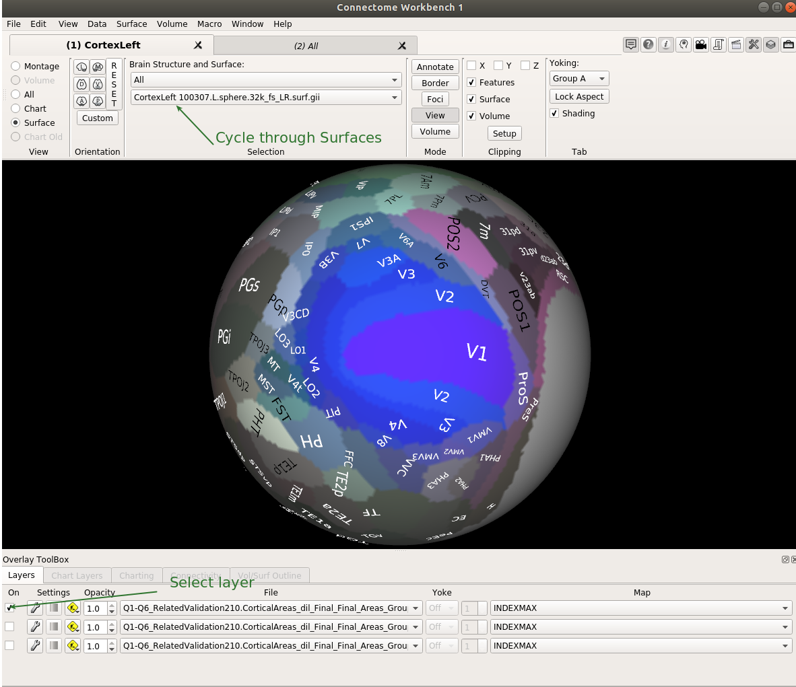
Task 2: Use MultiModal Surface Matching (MSM) to register a native mesh to the 164k fs_LR template
-
MultiModal Surface Matching (MSM) [Robinson et al. 2014] is a spherical surface-based registration method that enhances the traditional approach to surface-based registration by allowing the use of other generalizable brain features (e.g. function, connectivity etc) in addition to cortical folding to improve brain alignment. In this task however we will not be taking advantage of this enhancement and will be using MSM as any other traditional surface-based registration technique that uses only geometric features to achieve registration..
-
The version of MSM that is contained within the docker container is not the latest version and so takes a considerable amount of time to perform the registration for this practicum. I have thus gone ahead and created the registered spheres ahead of time which are stored in
./DATA/sub-??/MSMSulc. -
If you would like to repeat this part of the exercise yourself then on
line 64change the variableBYPASS="Y"toBYPASS="N"and run the docker container. On a 16 GB memory laptop with 8-cores this took about 50 minutes. -
Run the
002_register.shscript through the docker image as follows:
docker run -v ${PWD}:/mnt --rm -it --entrypoint bash tigrlab/fmriprep_ciftify:v1.3.2-2.3.3 /mnt/002_register.sh
-
In this task we are registering just the left hemisphere of a subject to the HCP's high resolution standard space 164k fs_LR.
-
This script performs the following steps:
- The sulcal overlay is a CIFTI file and this has to be separated into two surface GIFTIs so that we have a measure of sulcal values for the left hemisphere and the right hemisphere
- The MSM algorithm then aligns the spherical surface for the subject (sub-01.L.sphere.rot.native.surf.gii) with the standard Left Hemisphere 164K_fsLR spherical template (fsaverage.L_LR.spherical_std.164k_fs_LR.surf.gii) by matching the sulcal overlay for the left hemisphere that was obtained above with the sulcal overlay template (L.refsulc.164k_fs_LR.shape.gii). A "warp field" (L.sphere.reg.surf.gii) that describes this alignment is calculated and can then be used to resample surfaces and overlays from the native space to the standard space.
- Using
wb_command -surface-resamplewe resample the midthickness surface from native space to the new standard space. This new midthickness surface is called ../DATA/sub-01/amended.sub-01.L.midthickness.164k_fs_LR.surf.gii - Using
wb_command -metric-resamplewe resample the left cortical thickness overlay onto the new left midthickness surface in 164k_fs_LR space.
-
Change the script so that the other subject is now processed. Change
line 30to point to the new subject (SUB=sub-02) and rerun the docker command. -
In wb_view, select File > Close All Files and then open the two resampled surfaces for both subjects i.e.
./output/sub-01/sub-01.L.midthickness.164k_fs_LR.surf.giiand./output/sub-02/sub-02.L.midthickness.164k_fs_LR.surf.gii- notice that because both surfaces are registered to the 164K template they have exactly the same number of vertices and that their vertices are in correspondence. Select Montage view and deselct the Medial checkbox. Ensure that in the Montage Selection both checkboxes are selected and that both surfaces are represented. Click on either subjects surface mesh to select a vertex and notice that a corresponding vertex is identified on the surface of the other subject. These subject meshes are in vertex correspondence as they have been registered to the same template.
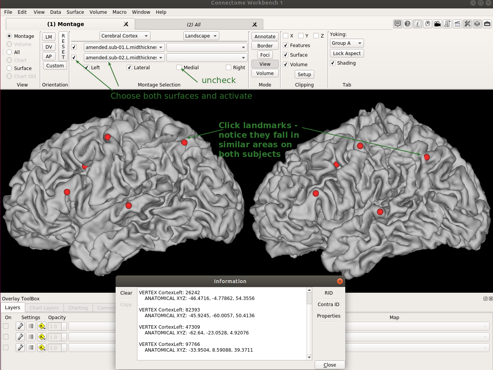
- One dramatic way to see how features generalize across subjects is to view the sulc overlay on the sphere. Again Close all Files in your current instance of wb_view. Now open another separate instance of wb_view so that you have two copies of the program running at the same time. In both instances open the standard sphere in
./DATA/config/fsaverage.L_LR.spherical_std.164k_fs_LR.surf.gii. In one instance open the resampled sulc overlay that was created by the script at./output/sub-01/amended.sub-01.L.sulc.164k_fs_LR.shape.giifor subject 01 and in the other instance open the resampled sulc overlay./output/sub-02/amended.sub-02.L.sulc.164k_fs_LR.shape.giifor subject 02. Activate both overlays and click on Reset if your exploration brings your spheres out of sync to bring them back to the default start. The image below uses the Surface view to compare hemispheres however you might want to experiment with the Montage view. Notice the similarity in the sulcal maps between both subjects as you explore both spheres.
Information
The sulcal overlay calculates the signed distance that any vertex needs to travel to reach its position in the fully inflated surface. Sulcal vertices will thus have positive numbers and gyral vertices will have negative numbers. This sulcal map is remarkable similar across subjects and is thus a good measure for driving surface-based registration.
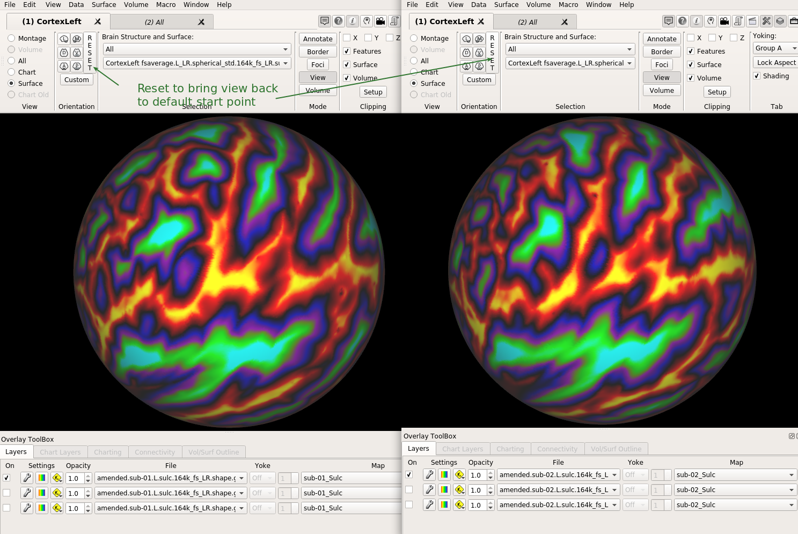
- Close one of the instances of wb_view when you are ready to move on to the next task.
Task 3: Project volumetric data onto a GIFTI Surface
- Run the
003_projection.shscript through the docker image as follows:
docker run -v ${PWD}:/mnt --rm -it --entrypoint bash tigrlab/fmriprep_ciftify:v1.3.2-2.3.3 /mnt/003_projection.sh
-
This script uses
wb_command -volume-to-surface-mappingto project the volumetric NIFTI-1 functional MRI data at./DATA/MNINonLinear/Results/task-rhymejudgment/task-rhymejudgment.nii.gzonto the midthickness layer you created in task 1. -
in wb_view, select File > Close All Files and then open the midthickness layer you created in task 1
amended.sub-01.L.midthickness.32k_fs_LR.surf.giifrom./output/sub-01and then open the projected surface overlaysub-01.L.midthickness.32k_fs_LR.func.giiwhich is in the same directory. -
Change the file from
metricdynconn - sub-01....to thesub-01.L.midthickness.32k_fs_LR.func.giilayer in the overlay toolbox. Notice that the functional MRI has been successfully projected on the surface. You can cycle through the different volumes by clicking the time index next to the Yoke column in the Overlay Toolbox. Unfortunately we are little limited in what we can do with this GIFTI functional overlay in wb_view.
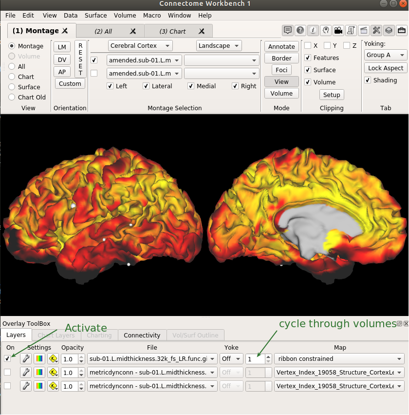
-
For example we cannot access the functional data values at individual timepoints (instead we see a long list of all the time values) and also each time point is labelled with 'ribbon constrained' rather than the unique time value in seconds. 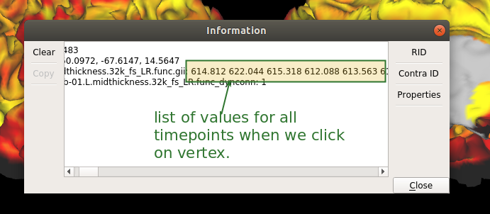
-
We do have access to the connectivity layer
metricdynconn - sub-01....which is created on the fly but we won't be able to see how the left cortex is connected to the right cortex or to sub-cortical structures at the same time. In the next task we will address the shortcomings of using the GIFTI overlay by creating a CIFTI file which will combine data from both surfaces and subcortical structures into one file.
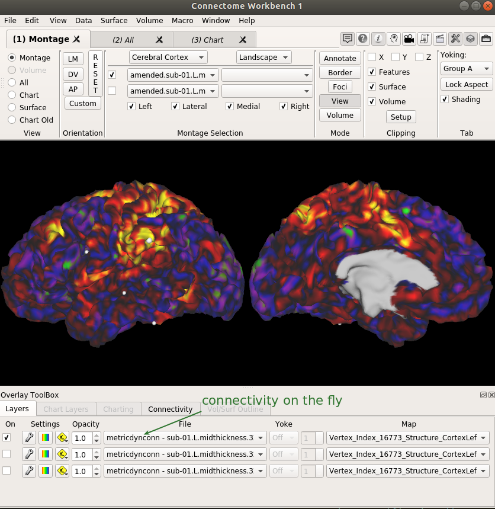
Task 4: Convert volumetric functional data into a CIFTI file
Note
The script for this task takes a little longer than the others to complete. It relies on the successful completion of Task 3 for the projection of the functional data onto the left hemisphere. Ensure that that Task 3 has been completed for the subject under study before running this task.
- Run the
004_ciftigen.shscript through the docker image as follows:
docker run -v ${PWD}:/mnt --rm -it --entrypoint bash tigrlab/fmriprep_ciftify:v1.3.2-2.3.3 /mnt/004_ciftigen.sh
-
This script continues the process of projecting the volume data onto the Right midthickness surface and then samples the sub-cortical data using a sub-cortical mask that covers the key grey-matter areas of the brain.
-
The script then uses
wb_command -cifti-create-dense-timeseriesto combine the data on the 2 surfaces and on the sub-cortical layer into a CIFTI file. -
From
./output/sub-01open the the leftamended.sub-01.L.midthickness.32k_fs_LR.surf.giiand rightamended.sub-01.R.midthickness.32k_fs_LR.surf.giimidthickness surfaces and the newly created CIFTI functional MRI overlay,created.den-91k.sub-01_rest.dtseries.nii. The CIFTI functional overlay provides advantages for viewing and manipulating neuroimaging data. -
Click on All View and change the file from
dynconn - created....to thecreated.den-91k.sub-01_rest.dtseries.niilayer in the overlay toolbox -
Notice that we can see the functional data for both hemispheres (surface-based vertices) as well as for the subcortical structures (volumetric voxels) at the same time.
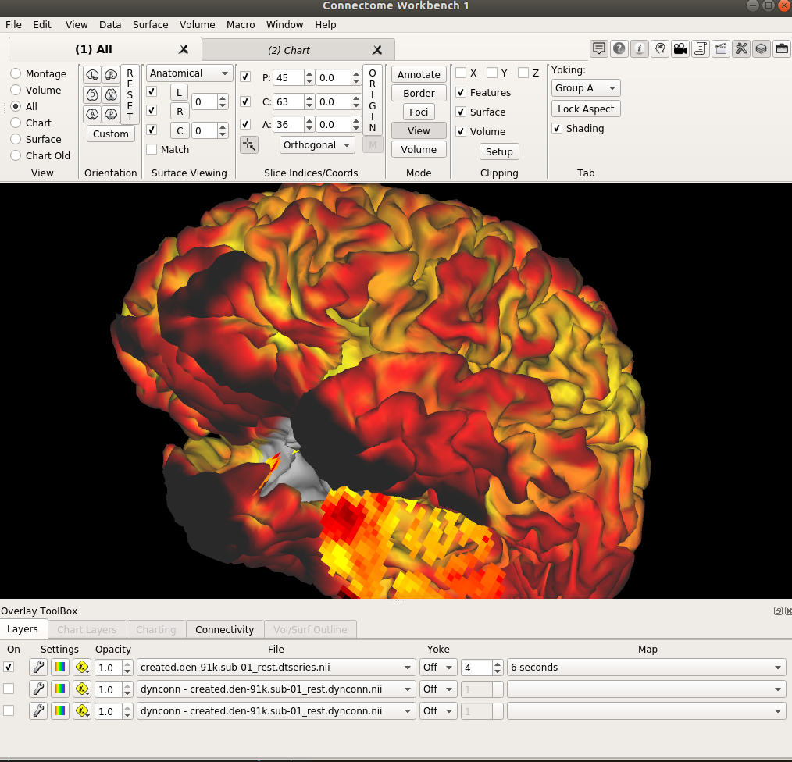
- We can also visualize the connectivity between all voxels and vertices at the same time by changing to the
dynconn - created....layer.
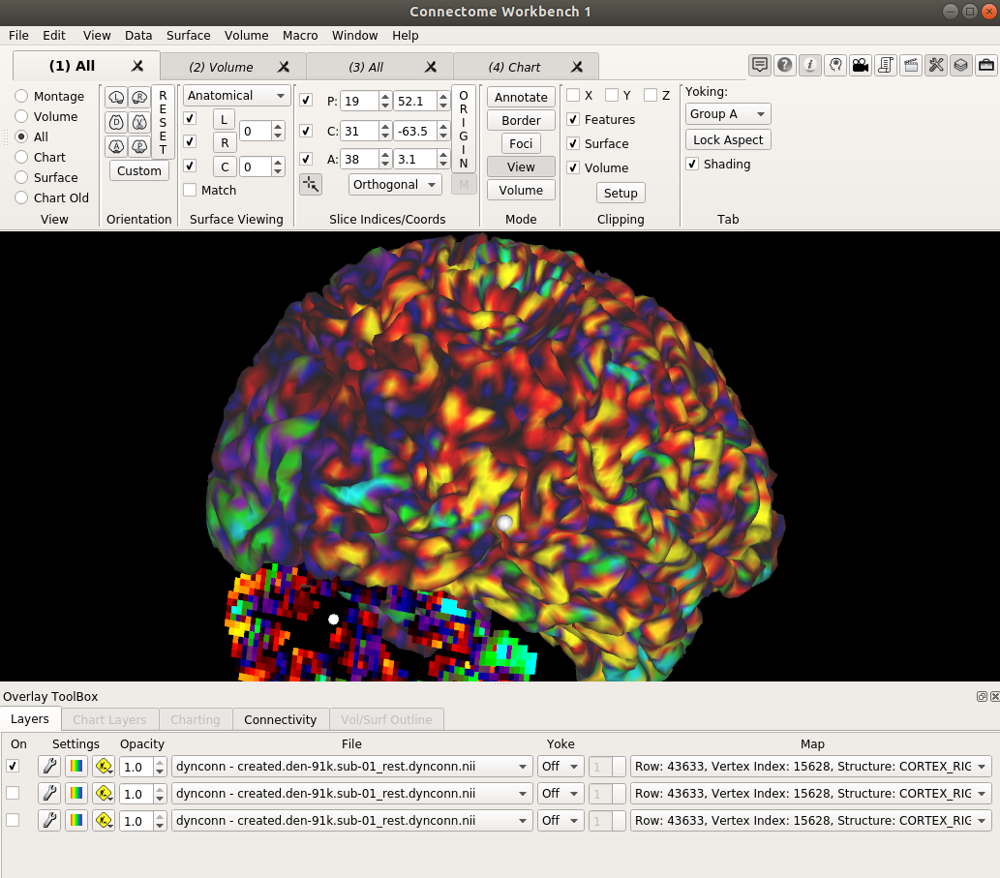
Task 5: Spatial Smoothing
- Run the
005_smoothing.shscript through the docker image as follows:
docker run -v ${PWD}:/mnt --rm -it --entrypoint bash tigrlab/fmriprep_ciftify:v1.3.2-2.3.3 /mnt/005_smoothing.sh
-
This script simply uses
wb_command -cifti-smoothingto spatially smooth our CIFTI fmri file using a gaussian kernel. -
From
./output/sub-01open Surfacesamended.sub-01.L.midthickness.32k_fs_LR.surf.giiandamended.sub-01.R.midthickness.32k_fs_LR.surf.gii - Now also open
created.den-91k.sub-01_rest.dtseries.niiandcreated.den-91k.sub-01_rest.smoothed.dtseries.nii - In the All or Surface view activate the smoothed and non-smoothed layers. Click the top layer off and on to see the blurring effect that spatial smoothing has on the data on the cortical surface. Spatial smoothing helps to reduce the deleterious impact of noise by smoothening peaks in the signal and boosting troughs. However this also has the effect of decreasing the spatial resolution of the data. Conservative use of spatial smoothing is advised [Coalson et al. 2018]. The HCP uses a gaussian kernel of 2mm for smoothing its functional data. If region of interest approaches are used to analyze data then smoothing can be avoided altogether.
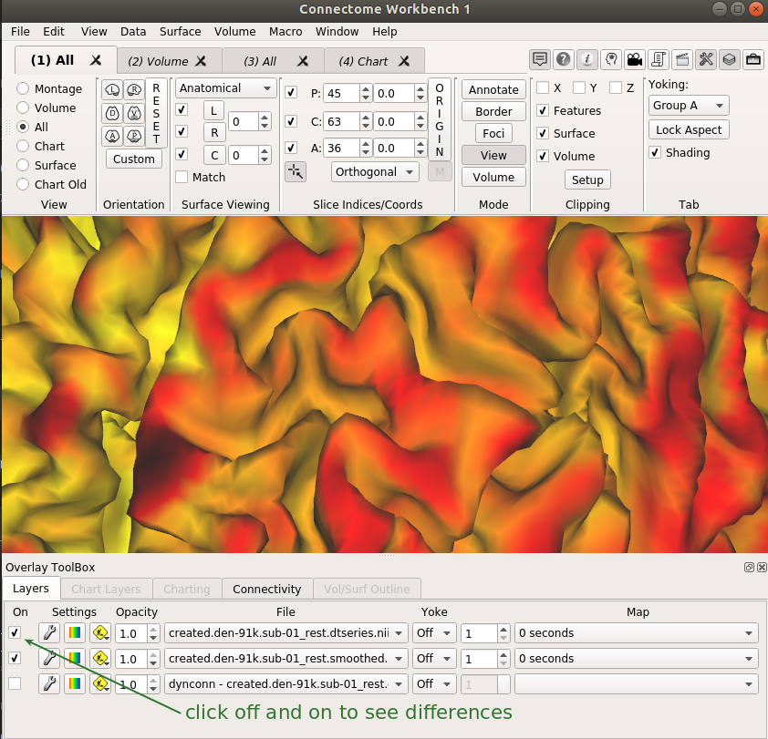
- In the Volume view observe the same effect for the sub-cortical voxels. 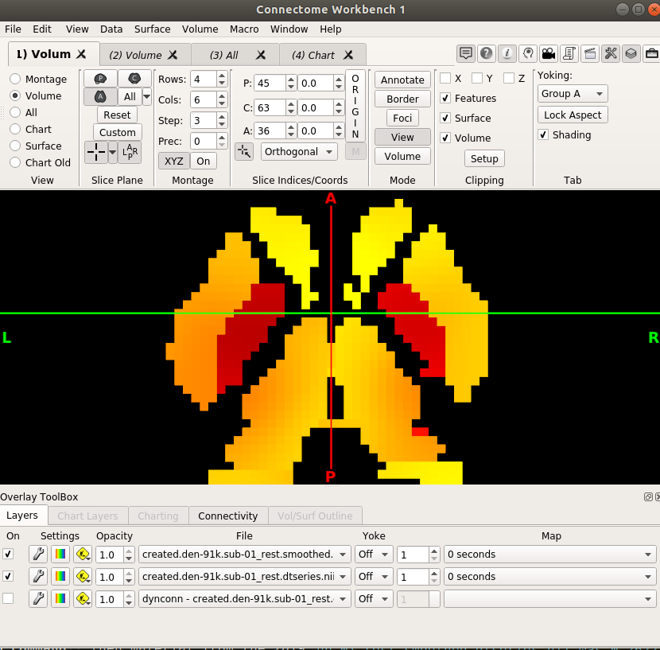
Extra Time?
If you have got through this quickly then here are some additional things to try:
- See if you can adapt the code to work for all the right hemisphere meshes and overlays.
- Generate all the surfaces and overlays for subject 02.
- Get the MSM algorithm to go through its paces in Task 2 by changing the variable
BYPASS="Y"toBYPASS="N" - Create your own script and try out different wb_commands
Final words
This concludes this introduction to using surface-based methods for processing data. A critical step that underpins all of the processing steps above is the creation of the initial surface meshes (white, pial etc) and overlays (sulc, thickness etc) by dedicated software like Freesurfer. Once these layers have been created then the range of processing steps described above can be accomplished using tools like wb_command, freesurfer modules, custom matlab or python scripts etc.
To gain more experience using wb_command then material from the 2019 wb_command course might be useful. Online help on individual workbench commands is available here. More complex common procedures that require a sequence of different wb_command calls to implement can be called through the wb_shortcuts script.
Missing from this practicum is any demonstration of how to perform group analysis using surface-based formats. An additional practicum is in development which will attempt to cover basic group analysis on the surface using tools like film_gls and PALM which are both part of the FSL ecosystem and which have been used for the HCP's surface-based task analysis. Development is occurring in this area quite rapidlyuser-friendly tools that facilitate statistical analysis on the surface should be available soon.
Please provide any corrections and suggestions by email or as issues on GitHub
Acknowledgements
Thanks to Dianne Patterson for sharing her comprehehsive notes on wb_command which were very helpful and to Tim Coalson for directing me to the HCP's 2019 wb_command course which provided inspiration.
References
Coalson, T. S., Van Essen, D. C., & Glasser, M. F. (2018). The impact of traditional neuroimaging methods on the spatial localization of cortical areas. Proceedings of the National Academy of Sciences, 115(27), E6356-E6365.
Dickie, E. W., Anticevic, A., Smith, D. E., Coalson, T. S., Manogaran, M., Calarco, N., ... & Voineskos, A. N. (2019). ciftify: A framework for surface-based analysis of legacy MR acquisitions. Neuroimage, 197, 818-826.
Esteban, O., Ciric, R., Finc, K., Blair, R. W., Markiewicz, C. J., Moodie, C. A., ... & Ye, Z. (2020). Analysis of task-based functional MRI data preprocessed with fMRIPrep. Nature Protocols, 1-17.
Glasser, M. F., Sotiropoulos, S. N., Wilson, J. A., Coalson, T. S., Fischl, B., Andersson, J. L., ... & Van Essen, D. C. (2013). The minimal preprocessing pipelines for the Human Connectome Project. Neuroimage, 80, 105-124.
Glasser, M. F., Coalson, T. S., Robinson, E. C., Hacker, C. D., Harwell, J., Yacoub, E., ... & Smith, S. M. (2016). A multi-modal parcellation of human cerebral cortex. Nature, 536(7615), 171-178.
Robinson, E. C., Jbabdi, S., Glasser, M. F., Andersson, J., Burgess, G. C., Harms, M. P., ... & Jenkinson, M. (2014). MSM: a new flexible framework for Multimodal Surface Matching. Neuroimage, 100, 414-426.
Xue, G., & Poldrack, R. A. (2007). The neural substrates of visual perceptual learning of words: implications for the visual word form area hypothesis. Journal of cognitive neuroscience, 19(10), 1643-1655.